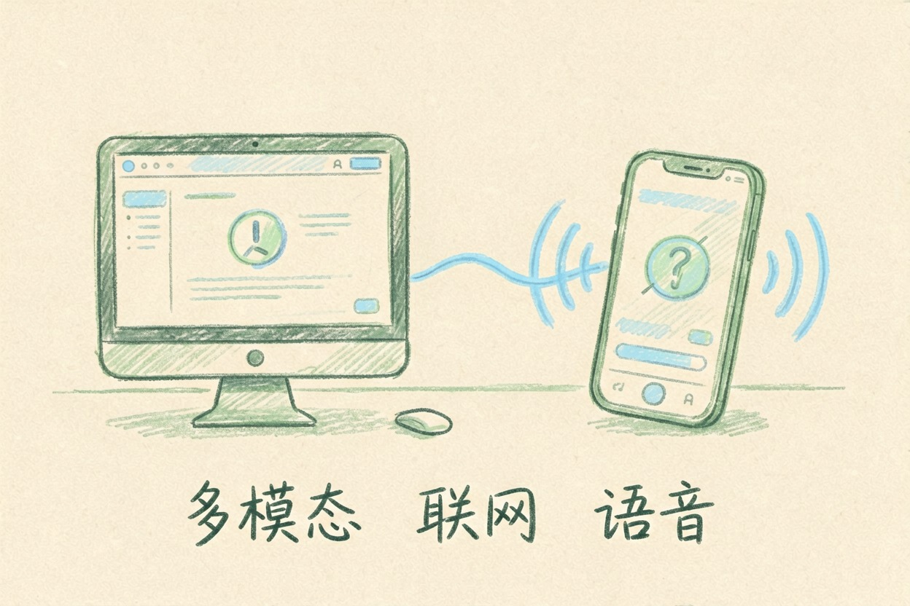
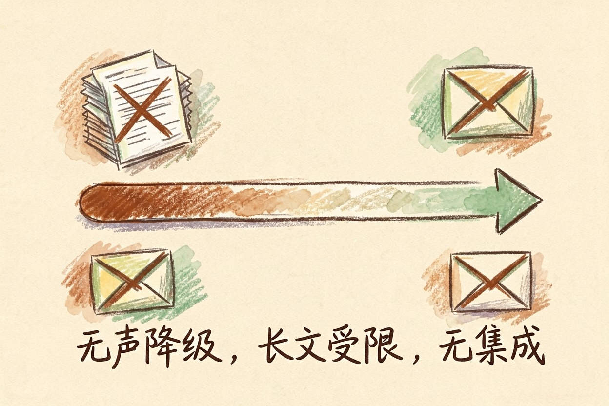
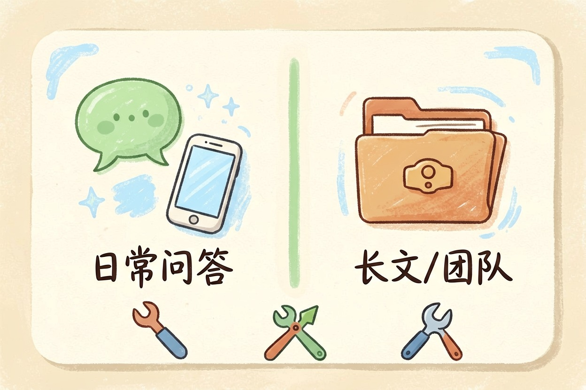

Gemini 免费版怎么样？额度、短板和适用人群
不花钱的那一档到底顶不顶用？日常问答和看图基本撑得住，真正卡人的往往不是次数上限。
Gemini 免费版怎么样？先给结论

Gemini 免费版怎么样，取决于你拿它干什么活。日常问答、翻译、读截图、写短文案，这一档撑得住。但要是每天连跑几十轮长对话，或者指望它接管公司文档流程，它会在你没防备的地方停下来。
做外贸的小周踩过一次。他拍产品图让它写英文卖点，前七八轮又快又准，第十轮开始明显变短变泛。他以为提示词写坏了，改了半小时，其实是撞上了额度的软墙。
免费能用到什么

先说好的一面，这一档能碰到的能力比多数人以为的多：
- 多模态：传图、传截图、传 PDF 让它读，可以直接问「这张报错截图什么意思」。
- 联网检索：问时效性问题它会去查，不靠训练数据硬编。
- 手机端语音：通勤路上口述一段，让它整理成要点。
额度官方调得勤，免费档通常有每日或每段时间的上限，具体数字要看 Gemini 帮助中心。经验规律是：短问题能连着问很久，长文档和图片消耗快得多。
想省额度，把零碎问题合并成一次问。这段可以直接抄走：
我要处理的任务是：（一句话说明）
背景信息：（把已知条件一次列完，不要分几轮补）
请一次性输出：
1. 直接答案
2. 你依据的关键信息点
3. 你不确定的地方，写清「需要我补充什么」
先按现有信息给完整版本，不要反问我。三个绕不开的短板
额度见底时没有提示。 它不弹窗说「今天用完了」，而是回答悄悄变短、高级模型自动降档。这种无声降级比封顶更磨人，你会以为是自己的问题。
长文档和批量上传受限。 几十页的合同、一整个文件夹的资料，这一档吃不下，交给专门啃长文的工具。
办公套件集成基本没有。 邮箱、文档侧边栏随手调用、批量处理邮件，多半划在付费档。
国内怎么用，两道坎先过

第一道是账号门槛，要谷歌账号和对应的网络环境。只想找个随手能用的中文助手，国内可直连的替代方案省事得多。
第二道是隐私。默认设置下，你的对话可能被拿去改进产品。进设置的应用活动页关掉开关，再清一次历史。客户名单、合同金额、身份证号，开关关没关都别往里贴。
什么人够用，什么人该考虑付费
| 你的用法 | 免费够不够 | 说明 |
|---|---|---|
| 日常问答、翻译、查资料 | 够 | 最稳的区间 |
| 读截图、看图写文案 | 够 | 多模态是亮点 |
| 每天几十轮长对话 | 悬 | 撞额度会降档 |
| 长合同、大批文档 | 不够 | 换啃长文工具 |
| 团队协作、邮件自动化 | 不够 | 集成在付费侧 |
三家怎么分工？带图带截图的活给它；要长文推理给 Claude，Claude 免费版的额度限制值得先摸清；要插件生态给 ChatGPT。准备掏钱前，先看 ChatGPT Plus 到底值不值。
做课件的李老师就这么分：查资料用它，教案初稿给 Claude，两边都没付费，一学期也够用。
额度与定价随时可能调整，掏钱前先去 Gemini 官网定价页扫一眼。
Gemini 免费版怎么样，一句话：轻中度用户根本不用升级，别为了「怕不够用」提前付费，等真卡住了再说。
本文信息核对于 2026-08-05。AI 产品的价格、免费额度与功能变动频繁，实际以各工具官网当前说明为准。